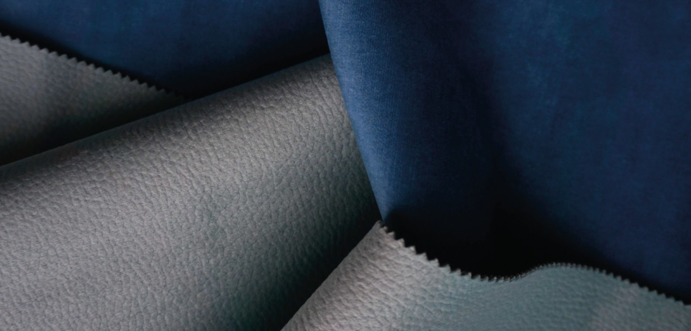
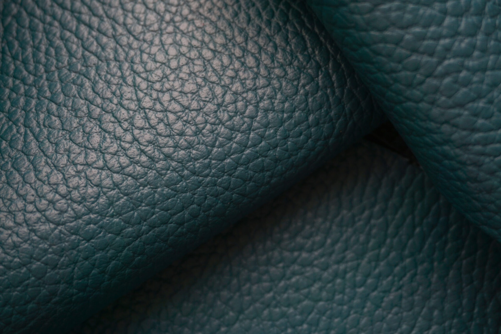
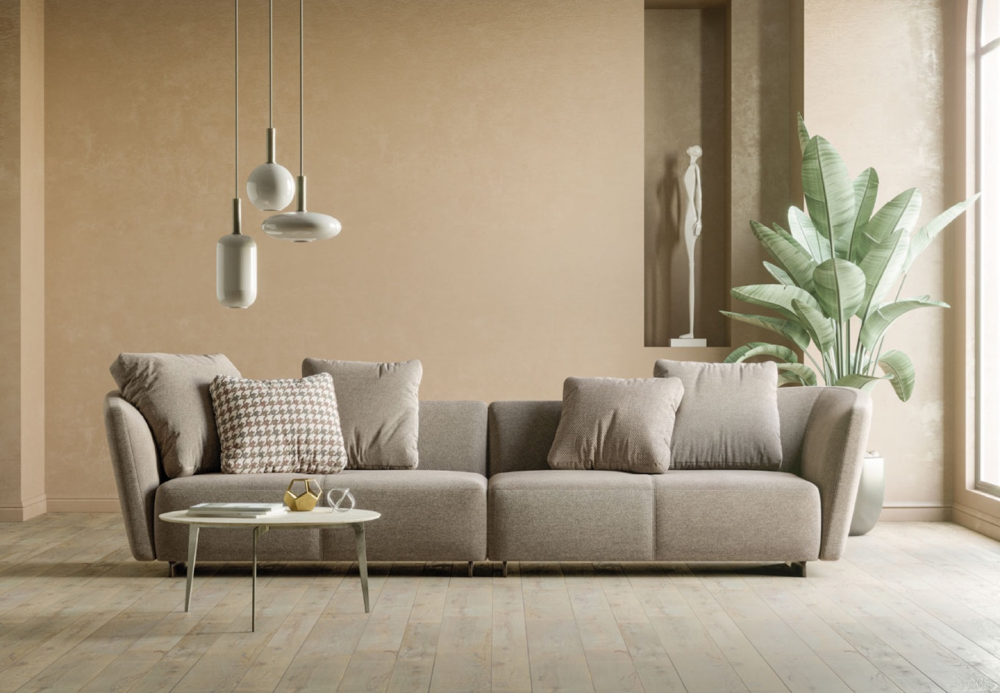

01 · Anni '60
Il boom del mobile imbottito
La nostra storia affonda le radici nel boom economico degli anni '60: ai piccoli produttori artigianali di salotti cominciano ad affiancarsi i primi giganti del mobile imbottito.

Nuova Pugliatex distribuisce pelli e tessuti per l'arredamento alle aziende del mobile imbottito, in Italia e all'estero.
Siamo un'azienda italiana specializzata in tessuti per arredamento, certificati, ecosostenibili e di alta qualità.




Anni '60
01 · Anni '60
La nostra storia affonda le radici nel boom economico degli anni '60: ai piccoli produttori artigianali di salotti cominciano ad affiancarsi i primi giganti del mobile imbottito.
02 · L'intuizione
Piero Marinuzzi allestisce un magazzino di pelli e tessuti d'arredamento per le aziende che non devono ordinare grandi quantitativi: trovano subito il materiale, nella quantità che serve.
03 · La crescita
Con la passione della famiglia Marinuzzi e dei suoi collaboratori l'azienda cresce e si specializza in pelli, finte pelli e tessuti, sia normali che ignifughi.
04 · Oggi
L'esperienza in tutti i tipi di rivestimento e la ricerca continua hanno reso inpelleitalia & intessutoitalia uno dei leader italiani nella distribuzione di tessuti per il mobile imbottito.
Scopri i tessuti
Ricerca e sviluppo
Ogni stagione selezioniamo nuovi articoli presso i migliori produttori e li testiamo, prima di proporli ai nostri clienti.
60.000
Quanto il tessuto regge allo strofinio di tutti i giorni. Aragon supera i 60.000 cicli.
Mano
Morbidezza, compattezza, il modo in cui il tessuto cade sulla seduta.
Colore
Quanto il colore resiste alla luce e al tempo senza sbiadire.
Resistenza
Quanto il tessuto regge allo strofinio di tutti i giorni. Aragon supera i 60.000 cicli.
Mano
Morbidezza, compattezza, il modo in cui il tessuto cade sulla seduta.
Colore
Quanto il colore resiste alla luce e al tempo senza sbiadire.
La gamma si aggiorna di continuo: dai tessuti antimacchia ai riciclati.

Showroom · Noci (BA)
Centinaia di tessuti, pelli e microfibre da vedere dal vivo, con il nostro team ad aiutarti a scegliere.